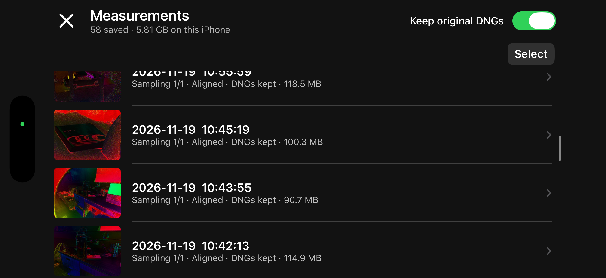

Chapter contents
User manual
Save, share and export
Results and data
10. Save, share and export


Keep original DNGs is at the top right; it is on in this example. Select starts multiple selection. Tap a measurement row to reopen its result. Each row shows its date, sampling, alignment status, whether DNGs were kept, and file size. See the steps below for sharing and deletion (Fig. 23).
Find and reopen a measurement
- From the result screen, tap the back arrow to return to the camera. Tap the Measurements icon at the lower left.
- Find your capture by its date and time. The newest measurements appear first. Each row shows a thumbnail, file size, whether DNGs are present, and sampling and alignment information when available.
- Tap a row to reopen its result. If Done is showing, tap it first to exit selection mode.
S012Cam saves completed measurements on the iPhone. If the result reports Save incomplete, tap Tap for details to see which files could not be saved.
Choose whether to keep the original RAW photos
In Measurements, set Keep original DNGs before starting a new capture. It is on by default and keeps all four original RAW photos. Turn it off to save space. The app still saves the data needed to reopen the result and export its maps. Each saved measurement keeps the DNG setting used when it was captured.
Share or back up the whole measurement
- In Measurements, swipe left on the row and tap Share.
- In the iPhone share sheet, choose a destination such as AirDrop or Save to Files, if offered. To save a separate copy, choose a location outside the S012Cam folder.
- Open the destination and check that the folder and any files you need are there before deleting the original.
For a new measurement, the folder includes measurement.json (capture settings), input_1.tiff through input_4.tiff (the data used to calculate the result), and 1.dng through 4.dng if you kept the originals. If you have already exported the result, it also includes the export subfolder. To browse measurement folders directly, open Files › Browse › On My iPhone › S012Cam.
Delete measurements
- One measurement: Swipe left on its row, tap Delete, then tap Delete again in the confirmation.
- Several measurements: Tap Select, then tap the rows you want. To choose every entry, tap Select All. Tap Delete (n) and check the count and storage shown before confirming. Tap Done to leave selection mode if you decide to keep the files.
Deleting a measurement in S012Cam permanently removes its entire folder from the iPhone, including its original DNGs and any exports stored inside it. Share or copy the files you want to keep first.
Export a measurement
- Open the result and tap Export.
- When Export Complete appears, tap Share… and choose a destination in the share sheet. This shares the export subfolder with the result maps and export notes. To share the original captures and calculation data too, use Share on the measurement row in section 10.
- To find the exported files later, open Files › Browse › On My iPhone › S012Cam, open the measurement folder, then open export.
| File | Use |
|---|---|
| PNG | Display images for AoLP+DoLP, DoLP, and AoLP, for the combined result and individual colour channels. |
| 32-bit floating-point TIFF | Per-pixel S0, S1, S2, DoLP, and AoLP maps for quantitative analysis. AoLP is in degrees. Invalid or undefined values are stored as NaN. |
| export.json | File list, map dimensions, and notes on units and pixel values. |
If an older measurement is listed as Pictures only, it can show its saved images, but exact values are unavailable for export.
11. Remove the rotator and care for it
Hold the iPhone firmly. With the other hand, hold the base near one end of its mounting plate. Tilt it away from that end, like another MagSafe accessory. Do not pull or twist the dial.
The gel pads stay on the rotator. You do not need to remove them to take the rotator off. If you remove the polarizer or MagSafe plate and the pads become dusty, rinse the pads with clean water. Do not use soap, alcohol or tissue. Let them air-dry completely before fitting them again.
Clean the polarizer with a soft dry cloth. Do not use alcohol or solvents. Keep the rotator away from sand and water. Do not leave it in a hot car or in strong direct sun for long periods.